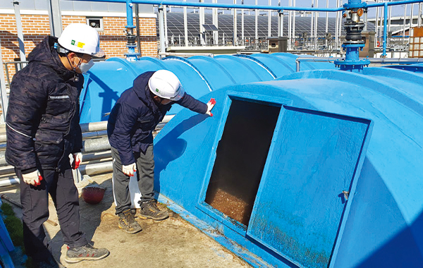

전국 최고의
수처리 우수시설을 만드는
땀과 열정
전국 최고의 수처리 운영능력을 입증한 직원들의 노고
안동시시설관리공단
안동시시설관리공단(이사장 권석순, 이하 공단)은 지난 2007년 1월 설립 후 안동시 전역의 공공 하·폐수처리시설을 효율적이고 안전하게 운영해 주민생활의 편익과 복리증진 등에 기여해 오고 있다. 특히 2019년부터 3년 연속 환경부 주관 우수기관으로 선정되는 등 전국 최고의 지방공기업으로 발돋움하고 있다. 이는 안정적인 수질 관리를 위해 노력한 직원들의 노고가 있었기에 가능했다. 청정한 수질 환경을 조성하기 위해 오늘도 고군분투하고 있는 하수처리시설 현장의 하루를 담아본다.
글 편집실 사진 안동시시설관리공단 경영지원실
01
하수처리장으로 들어오는 하수에 포함된 침사물과 협잡물을 조목 스크린(막대 바 15mm 이상)을 통해 분리·제거하고 있습니다. 유입펌프장은 차집관거를 통해 처리장에 유입된 하수를 침사지에서 협잡물과 토사를 제거한 후 양수하여 이후 공정에서 자연유하로 처리되도록 수위를 높여 주기 위한 시설인데요. 이 유입펌프장의 가동 상태를 점검하고 있습니다.
02
최초침전지는 유입펌프장에서 양수된 하수를 중력에 의해 자연적으로 침전시켜 고형물질을 제거하기 위한 시설인데요. 최초침전지 내 침전된 고형물을 슬러지 저류조로 이송하기 위해 펌프 및 밸브를 점검하는 등 설비의 이상 유무를 확인하고 있습니다.
03
생물반응조는 일차침전지를 통과한 하수 중 콜로이드성 및 용해성 유기물질을 미생물의 반응을 통해 생물학적으로 제거하는 공정인데요. 미생물을 통해 유기물질의 분해 효율성을 높이기 위한 내부 반송 펌프를 점검하고 있습니다.
04
최종침전지 내 고형물의 양을 일정하게 유지하기 위해서 계면(높이)을 측정해야 합니다. 반송슬러지 펌프 모터의 전력 상태를 확인해야 오작동을 막을 수 있습니다. 슬러지 이송 펌프 모터의 전류값을 측정해 모터 전력 상태를 확인하고 있습니다.
05
이차침전지 처리수 중에 포함된 부유물질을 제거하기 위한 여과기의 상태를 확인하고 있습니다. 총인처리시설은 하수 중에 포함된 총인을 응집 여과하는 시설로 총인 농도를 낮추는 역할을 합니다. 처리수 내 상존할 수 있는 병원균은 자외선을 통해 살균·처리하고 있습니다.
06

부숙토 생산 재활용시설에서는 하수처리과정에서 발생하여 탈수 처리한 슬러지를 건조하고 부숙처리해 토양개량제로 사용할 수 있도록 부숙토를 반출하고 있습니다. 이 외에도 가축분뇨연계처리시설에서는 축산폐수 등을 정화 처리하고 있습니다. 오늘도 공단의 하수처리장의 직원들은 철저하게 수질을 관리하고 청정한 지역을 만들기 위해 고군분투하고 있습니다.